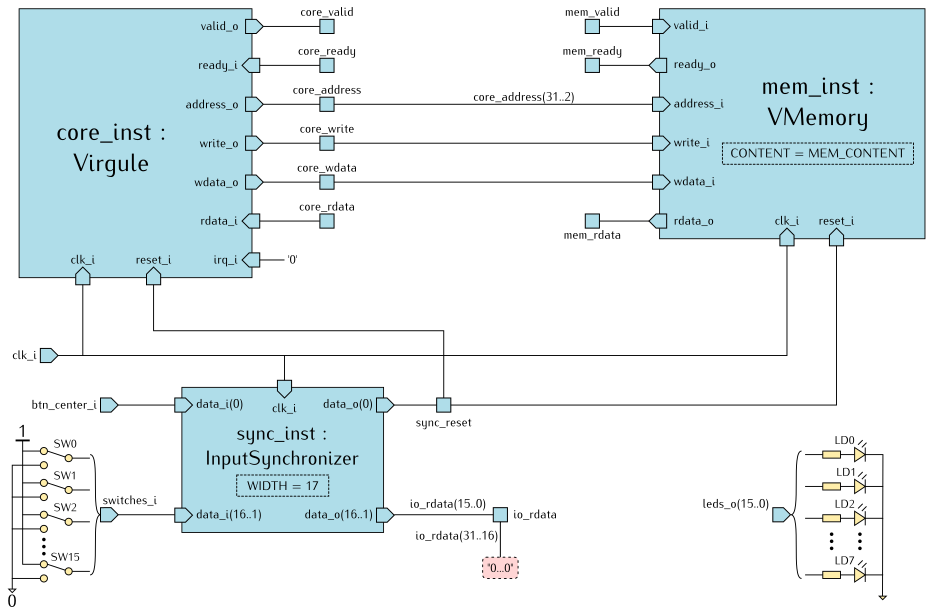
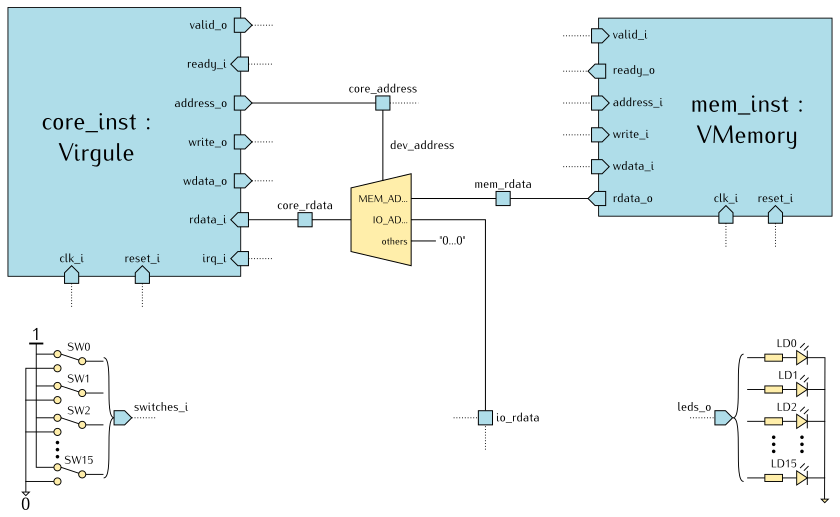
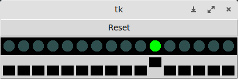
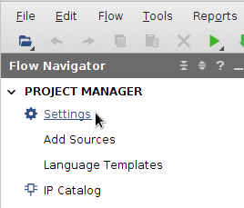

Au cours de cette séquence, on se propose d’utiliser le langage VHDL pour
réaliser un petit ordinateur embarqué.
Il s’agira tout d’abord d’assembler un circuit à l’aide de composants fournis :
- un processeur,
- de la mémoire,
- des périphériques d’entrée/sortie.
Pour animer cet ordinateur, il faudra ensuite écrire un programme (en langage
d’assemblage ou en langage C), le compiler, et charger le code machine obtenu
dans la mémoire de notre circuit.
Dans cette page, nous commençons par rappeler les principes de base pour
construire un ordinateur minimal en utilisant un processeur appelé Virgule.
Un ordinateur minimal
Virgule est un processeur RISC
(Reduced Instruction Set Computer) développé en VHDL par Guillaume Savaton
dans un but pédagogique.
Il s’agit d’une réalisation concrète du processeur que vous avez déjà pu utiliser
dans le simulateur emulsiV
au premier semestre.
Virgule implémente un sous-ensemble minimal du jeu d’instruction
RISC-V 32 bits.
Ici, « minimal » signifie que ce processeur accepte toutes les instructions
de traitement de données en nombres entiers, de branchement et d’accès mémoire
susceptibles d’être produites par un compilateur C comme GCC pour un programme
autonome typique.
Vous trouverez plus d’informations sur le jeu d’instructions de Virgule
en annexe.
Pour le moment, nous nous intéresserons plus particulièrement à la façon dont
le processeur interagit avec la mémoire et les périphériques.
Modèle mémoire
Dans une configuration minimale, un ordinateur est composé d’un processeur
et de mémoire.
La mémoire contient :
- les codes binaires des instructions que le processeur doit exécuter,
- les données traitées par ces programmes, également représentées en binaire.
Pour le processeur, la mémoire est un tableau de cellules.
Chaque cellule contient un octet (8 bits) et est repérée par un numéro : son adresse.
Virgule étant un processeur 32 bits, ses instructions peuvent traiter
des données qui occupent entre 1 et 4 cellules consécutives en mémoire.
Les instructions elles-mêmes sont de taille fixe : une instruction occupe
toujours 4 cellules.
La spécification RISC-V définit trois tailles de données :
| Nom |
Taille (octets) |
Taille (bits) |
| Byte (octet) |
1 |
8 |
| Half word (demi-mot) |
2 |
16 |
| Word (mot) |
4 |
32 |
Matériellement, Virgule est capable de lire ou écrire 1, 2 ou 4 octets
dans la mémoire simultanément, mais en respectant des contraintes d’alignement.
Le tableau suivant donne la liste des instructions d’accès mémoire et les
contraintes qu’elles doivent respecter.
Il mentionne également l’opération Fetch, qui correspond à la lecture d’une
instruction en mémoire :
| Opérations ou instructions |
Taille des données
(octets) |
Adresses autorisées |
LB (Load Byte)
LBU (Load Byte Unsigned)
SB (Store Byte) |
1 |
Toutes |
LH (Load Half word)
LHU (Load Half word Unsigned)
SH (Store Half word) |
2 |
Multiples de 2 |
Fetch
LW (Load Word)
SW (Store Word) |
4 |
Multiples de 4 |
Pour mieux visualiser ces contraintes, on peut considérer que la mémoire
est organisée en lignes de quatre cellules.
- Une instruction
LB, LBU ou SB peut accéder à n’importe quelle cellule dans une ligne.
- Une instruction
LH, LHU ou SH peut accéder à la moitié gauche ou droite d’une ligne.
- Une instruction
LW ou SW, ou une opération Fetch, accède à une ligne entière.
Comme le montre la figure ci-dessus, Virgule accède à la mémoire en mode
little-endian : pour une valeur de type demi-mot ou mot,
l’octet de poids faible est rangé en premier dans la mémoire, à l’adresse la plus petite.
Le processeur ne fait pas de différence entre la mémoire et les périphériques.
Il utilise les mêmes instructions et le même protocole de communication pour
échanger des données avec chaque composant du système, quelle que soit
sa fonction.
Pour que ce soit possible, on attribue une plage d’adresses à chaque bloc de
mémoire et à chaque périphérique.
Ces plages d’adresses constituent le plan mémoire, ou plan d’adressage
du système.
Nous verrons plus loin comment cela se concrétise physiquement.
L’interface bus de Virgule
Dans le langage de la vie courante, un bus est un moyen de transport en commun.
En électronique, on utilise le terme « bus » pour désigner un ensemble de
conducteurs électriques qui transportent des données et des informations de contrôle
entre différents composants en respectant un certain protocole.
Un processeur possède typiquement des bus de données et d’adresses associés à
des signaux de contrôle.
Pour le processeur Virgule, ils figurent parmi les ports de son entité :
| Port |
Direction |
Type |
Rôle |
clk_i |
Entrée |
Logique |
Le signal d’horloge global |
reset_i |
Entrée |
Logique |
La commande de réinitialisation |
valid_o |
Sortie |
Logique |
Demande de transfert de donnée |
ready_i |
Entrée |
Logique |
Indicateur de fin d’une lecture ou d’une écriture |
address_o |
Sortie |
Vecteur de 32 bits |
Le bus d’adresses |
write_o |
Sortie |
Vecteur de 4 bits |
Sélection des octets à écrire |
wdata_o |
Sortie |
Vecteur de 32 bits |
Write data, le bus de données en écriture |
rdata_i |
Entrée |
Vecteur de 32 bits |
Read data, le bus de données en lecture |
irq_i |
Entrée |
Logique |
Interrupt Request, demande d’interruption |
On s’intéressera en particulier aux ports suivants, qui constituent l’interface
de communication de Virgule avec les autres composants de l’ordinateur :
wdata_o et rdata_i transportent les données que le processeur envoie (écrit) ou reçoit (lit),address_o indique à quel emplacement (dans quelle ligne de la mémoire) une donnée doit être écrite ou lue,write_o indique si une écriture doit être effectuée, et sur quels octets dans la ligne sélectionnée,valid_o et ready_i permettent de synchroniser les échanges de données,- avec
irq_i, un périphérique peut demander au processeur d’interrompre le programme en cours pour traiter un événement prioritaire.
Nous fournissons également un composant mémoire sous la forme d’une entité
VMemory représentée ci-dessous :
Pour VMemory, le port address_i sert à sélectionner une ligne de 4 octets
et write_i à sélectionner les octets dans cette ligne.
Le numéro de la ligne s’obtient en divisant par 4 la valeur de l’adresse
fournie par le processeur et en prenant la partie entière du résultat.
Cela revient à éliminer les deux bits de poids faible de l’adresse.
Nous pouvons maintenant affiner le schéma de notre ordinateur minimal en
interconnectant une instance de Virgule avec une instance de VMemory.
En l’absence de périphérique, l’entrée irq_i du processeur n’est pas utilisée.
Protocole d’échange de données
Les échanges de données entre le processeur et les autres composants sont
encadrées par un mécanisme de synchronisation simple :
- Le processeur met
valid à '1' pour indiquer que les signaux address,
wdata et write sont à jour et stables.
- La mémoire, ou le périphérique concerné, réagit en effectuant une opération de
lecture ou d’écriture à l’adresse indiquée.
S’il s’agit d’une lecture, elle met à jour
rdata.
Lorsque l’opération est terminée, elle met ready à '1'.
Ainsi, pour écrire une valeur en mémoire, ou pour envoyer une valeur à un périphérique,
le processeur effectue les opérations suivantes :
- Configurer les bus pour une écriture :
- Affecter à
address_o l’adresse des cellules à modifier.
- Affecter à
wdata_o la valeur à écrire.
- Indiquer sur
write_o quels octets il faut écrire.
- Mettre
valid_o à '1'.
- Attendre que
ready_i passe à '1'.
- Remettre
valid_o à zéro.
Pour une lecture, le processeur effectue les opérations suivantes :
- Configurer les bus pour une lecture :
- Affecter à
address_o l’adresse des cellules à lire.
- Mettre
write_o à zéro.
- Mettre
valid_o à '1'.
- Attendre que
ready_i passe à '1'.
- Prélever la valeur lue sur
rdata_i et remettre valid_o à zéro.
Notez que dans ce protocole, toutes les lectures se font sur 32 bits.
Selon le format de la donnée qu’il attend, le processeur sélectionne les octets
qui l’intéressent et les convertit au format signé ou non signé.
Préparation du projet Vivado
Voici la liste des fichiers sources VHDL que nous utiliserons dans cette activité.
Tous ces fichiers sont situés dans des sous-dossiers de CoCiNum/src/vhdl.
| Sous-dossier |
Fichier |
Rôle |
InputSynchronizer |
InputSynchronizer.vhd |
Une entité pour synchroniser les entrées du circuit. |
Virgule |
Virgule_pkg.vhd |
Définitions de types et de constantes pour travailler avec le processeur Virgule. |
Virgule |
Virgule-precompiled.vhd |
Une version précompilée du processeur Virgule. |
Virgule |
VMemory.vhd |
De la mémoire vive pour le processeur Virgule. |
Computer |
Computer_pkg.vhd |
Définitions de constantes pour l’entité Computer. |
Computer |
Computer.vhd |
L’entité Computer et son architecture à compléter. |
Basys3 |
Basys3_Buttons.xdc |
Fichier de contraintes pour Vivado, définition des boutons-poussoirs. |
Basys3 |
Basys3_LEDs.xdc |
Fichier de contraintes pour Vivado, définition des LED. |
Basys3 |
Basys3_Switches.xdc |
Fichier de contraintes pour Vivado, définition des interrupteurs. |
Basys3 |
Basys3_Clock.xdc |
Fichier de contraintes pour Vivado, définition de l’horloge. |
Nous utiliserons également un programme de démonstration en
langage d’assemblage RISC-V.
Ce programme est situé dans le dossier CoCiNum/src/asm/SimpleIO.
Nous ne fournissons pas le code source du processeur Virgule.
Nous nous réservons la possibilité d’organiser des activités pratiques où
les participants développeraient eux-mêmes le processeur.
Le fichier Virgule-precompiled.vhd contient du code VHDL qui a fait l’objet
d’une première étape de synthèse logique.
Il n’est pas destiné à être lu par un être humain.
Si vous ne l’avez pas encore fait, ouvrez un terminal et démarrez Vivado à l’aide
des commandes suivantes :
cd $HOME/CoCiNum
./scripts/vivado
Créez un nouveau projet en renseignant les informations suivantes :
| Page |
Champ ou action |
Valeur |
| Project Name |
Project name |
Computer |
|
Project location |
CoCiNum/vivado |
|
Create project subdirectory |
Oui |
| Project Type |
|
RTL Project |
| Add Sources |
Add Files |
Fichiers .vhd dans le tableau précédent |
|
Copy sources into project |
Non |
| Add Constraints |
Add Files |
Fichiers .xdc dans le tableau précédent |
|
Copy constraints files into project |
Non |
| Default Part |
Family |
Artix-7 |
|
Package |
cpg236 |
|
Speed |
-1 |
|
Part |
xc7a35tcpg236-1 |
Mon premier système embarqué
Notre premier système sera représenté par l’entité Computer avec les entrées/sorties suivantes :
| Port |
Direction |
Type |
Rôle |
clk_i |
Entrée |
Logique |
Le signal d’horloge global |
btn_center_i |
Entrée |
Logique |
Le bouton-poussoir central de la carte Basys3, utilisé comme commande de réinitialisation |
switches_i |
Entrée |
Vecteur de 16 bits |
Les interrupteurs de la carte Basys3 |
leds_o |
Sortie |
Vecteur de 16 bits |
Les voyants lumineux de la carte Basys3 |
Son architecture Structural utilisera trois principaux composants :
- un cœur de processeur,
core_inst, instance de l’entité Virgule,
- un bloc de mémoire,
mem_inst, instance de l’entité VMemory,
préchargé avec un programme d’exemple SimpleIO que nous construirons plus tard,
- un composant de synchronisation
sync_inst, instance de l’entité InputSynchronizer,
pour éviter le problème de métastabilité
qui peut se produire lors de la mémorisation de signaux dont le timing n’est
pas maîtrisé.
Dans le fichier Computer.vhd, ajoutez les instructions d’instanciation
correspondant au schéma ci-dessous.

Le contenu initial de la mémoire mem_inst est défini par un paramètre générique
CONTENT auquel vous devez associer la constante MEM_CONTENT
déclarée dans le paquetage Computer_pkg.
Cette constante elle-même renvoie au contenu du paquetage SimpleIO_pkg
qui sera construit plus tard, en compilant le programme de démonstration SimpleIO.
Dans les sections suivantes, nous allons ajouter les connexions et les éléments
d’aiguillage qui permettront au processeur de lire et d’écrire dans la mémoire,
de lire l’état des interrupteurs, de modifier l’état des LED.
Définition du plan d’adressage
Le plan d’adressage attribue une plage d’adresses à chaque bloc de mémoire ou chaque périphérique.
Pour définir ces plages d’adresses, une technique très répandue consiste à choisir un groupe de bits
d’adresses qui jouera le rôle d’identifiant pour le bloc de mémoire ou le périphérique correspondant.
Dans tous les exemples qui vont suivre, nous choisissons d’utiliser les 8 bits de poids fort de l’adresse
comme identifiant. Ainsi :
- Les bits 31 à 24 de l’adresse indiqueront quel bloc de mémoire ou quel périphérique est concerné par une opération de lecture ou d’écriture.
- Les bits 23 à 0 représenteront l’adresse de la cellule à lire ou à écrire dans ce bloc de mémoire ou ce périphérique.
Le plan d’adressage ressemblera à ceci :
| Adresse (bits 31 à 24) |
Plage |
Composant |
| 0000 0000bin |
00000000hex – 00FFFFFFhex |
Mémoire (VMemory) |
| 1000 0000bin |
80000000hex – 80FFFFFFhex |
Périphérique numéro 0 |
| 1000 0001bin |
81000000hex – 81FFFFFFhex |
Périphérique numéro 1 |
| 1000 0010bin |
82000000hex – 82FFFFFFhex |
Périphérique numéro 2 |
| 1000 0011bin |
83000000hex – 83FFFFFFhex |
Périphérique numéro 3 |
| ⋮ |
⋮ |
⋮ |
| 1111 1111bin |
FF000000hex – FFFFFFFFhex |
Périphérique numéro 127 |
Matériellement, les bits 31 à 24 de l’adresse seront utilisés pour aiguiller
la sortie valid_o du processeur vers l’entrée valid_i de la mémoire ou du
périphérique concerné.
Dans un souci de lisibilité du code source VHDL, nous avons déclaré un alias
dev_address de la manière suivante :
alias dev_address : byte_t is core_address(31 downto 24);
Ainsi, dans le corps de l’architecture, on pourra simplement écrire
dev_address au lieu de core_address(31 downto 24).
Dans cet exemple, nous allons regrouper les interrupteurs et les LED dans la
plage du périphérique numéro 0.
Le circuit produira un signal mem_valid destiné à la mémoire, et un signal
io_valid pour les entrées/sorties.
Le fichier Computer_pkg.vhd contient des constantes que vous devrez utiliser
dans votre architecture :
| Constante |
Type |
Valeur |
Rôle |
CLK_FREQUENCY_HZ |
Entier |
100000000 |
La fréquence d’horloge du système, en Hz |
MEM_ADDRESS |
Octet |
00hex |
Les bits 31 à 24 de l’adresse pour accéder à la mémoire |
MEM_CONTENT |
Tableau de mots |
work.SimpleIO_pkg.DATA |
Le contenu initial de la mémoire |
IO_ADDRESS |
Octet |
80hex |
Les bits 31 à 24 de l’adresse pour accéder aux entrées/sorties |
Complétez le fichier Computer.vhd de manière à respecter le schéma ci-dessous
(pour une question de place, nous avons abrégé les noms des constantes
MEM_ADDRESS et IO_ADDRESS en MEM_AD... et IO_AD...).
Lecture et écriture des données
En lecture, l’entrée rdata_i du processeur recevra :
- soit la valeur du port
rdata_o de la mémoire, à travers un signal mem_rdata,
- soit l’état des interrupteurs, à travers un signal
io_rdata,
- soit zéro lorsque l’adresse ne correspond pas à une plage connue.
Ici encore, on utilise les bits 31 à 24 de l’adresse pour assurer l’aiguillage des données :

En écriture, aucun aiguillage n’est nécessaire. La valeur du port wdata_o du processeur
est envoyée simultanément à la mémoire et aux périphériques.
Celui dont le signal valid est actif traitera la demande.
Pour que l’état des LED reste stable entre deux écritures, nous choisissons de
le mémoriser dans des bascules D que nous avons regroupées pour former deux
registres de 8 bits.
Ces registres sont analogues à des cellules de mémoire.
Chacun reçoit un octet du bus de données wdata et réagit à un bit de commande
write lorsque io_valid est actif.
Complétez le fichier Computer.vhd de manière à respecter le schéma ci-dessous :

Dans le plan d’adressage, on peut donc représenter les entrées/sorties de la manière suivante :
| Opération |
Adresse |
+0 |
+1 |
+2 |
+3 |
| Lecture |
80000000hex |
switches_i(7..0) |
switches_i(15..8) |
0 |
0 |
| Écriture |
80000000hex |
leds_o(7..0) |
leds_o(15..8) |
– |
– |
Dans cette configuration, pour la même adresse, la lecture et l’écriture
donnent accès à des informations différentes : la lecture retourne l’état des entrées,
l’écriture met à jour les sorties.
Proposez une modification des deux schémas précédents pour que l’on puisse
relire la valeur des registres leds_o en respectant le plan d’adressage suivant :
| Opération |
Adresse |
+0 |
+1 |
+2 |
+3 |
| Lecture |
80000000hex |
leds_o(7..0) |
leds_o(15..8) |
switches_i(7..0) |
switches_i(15..8) |
| Écriture |
80000000hex |
leds_o(7..0) |
leds_o(15..8) |
– |
– |
Acquittement des échanges de données
À chaque opération de lecture ou d’écriture, après avoir activé sa sortie valid_o,
le processeur attend le passage à '1' de son entrée ready_i.
De son côté, lorsqu’il détecte l’activation de son signal valid, chaque bloc de mémoire ou
chaque périphérique active son signal ready au bout de N périodes d’horloge.
L’entité VMemory possède déjà une sortie ready_o qui impose un cycle d’attente
lors de chaque opération de lecture ou d’écriture.
Nous devons compléter le circuit pour gérer les autres cas :
- La lecture des interrupteurs : elle prend effet immédiatement, dès que le signal
io_valid est actif.
- L’écriture des LED : elle prend effet au front d’horloge où
io_valid est actif.
- La lecture ou l’écriture dans une plage d’adresses non affectée : l’opération prend effet immédiatement.
Dans le schéma ci-dessous, nous traitons les trois cas ensemble, dans la branche else
du multiplexeur :
Complétez le fichier Computer.vhd de manière à respecter le schéma ci-dessus.
Architecture complète
Voici le schéma complet de notre ordinateur.
Avant de passer à la suite, vérifiez que vous n’avez rien oublié.
Programme de démonstration
Pour que cet ordinateur fonctionne, il faut charger un programme dans sa mémoire.
Nous fournissons un exemple sous la forme du fichier SimpleIO.s
dans le dossier CoCiNum/src/asm/SimpleIO.
.global main
main:
li x5, 0x80000000
li x7, 0
main_loop:
lhu x6, (x5)
sh x6, (x5)
j main_loop
Que se passera-t-il lorsque nous exécuterons ce programme :
- d’abord en ignorant les trois lignes en commentaire (entre
/* et */) ?
- et après avoir décommenté ces trois lignes ?
Compilation
Dans un terminal, exécutez les commandes suivantes :
cd $HOME/CoCiNum/src/asm/SimpleIO
make
Le résultat de la compilation est un fichier SimpleIO_pkg.vhd que vous
pouvez ouvrir.
Il contient un paquetage SimpleIO_pkg qui déclare une constante DATA
de type tableau de mots :
package SimpleIO_pkg is
constant DATA : word_vector_t(0 to 16383) := (x"0140006F", ...);
end SimpleIO_pkg;
Ce tableau représente le contenu initial d’un bloc de mémoire
capable de contenir 16384 mots (65536 octets).
Après le symbole :=, les valeurs hexadécimales entre les parenthèses
sont les codes des instructions et des données rangés dans cette mémoire.
Pour associer ce programme, avec notre ordinateur, nous avons tout
d’abord déclaré une constante MEM_CONTENT dans le paquetage Computer_pkg :
package Computer_pkg is
...
constant MEM_CONTENT : word_vector_t := work.SimpleIO_pkg.DATA;
...
end Computer_pkg;
Nous avons ensuite associé cette constante au paramètre générique CONTENT
de notre instance de VMemory :
mem_inst : entity work.VMemory
generic map(
CONTENT => MEM_CONTENT
)
port map(
...
);
Ajoutez le fichier CoCiNum/src/asm/SimpleIO_pkg.vhd à votre projet Vivado.
Simuler le fonctionnement du système
Avant de tenter de déployer notre système sur du vrai matériel, nous
allons vérifier son fonctionnement en le simulant à l’aide
des logiciels libres suivants :
- GHDL, un simulateur VHDL ;
- cocotb, un environnement pour automatiser des tests de modules VHDL ou Verilog, en utilisant le langage Python ;
- Python et tkinter, pour créer des interfaces graphiques ;
- GTKWave, pour afficher des chronogrammes.
Démarrez la simulation en exécutant les commandes suivantes :
cd $HOME/CoCiNum/src/vhdl/Computer/tests-io
make
Si tout s’est bien passé, la fenêtre ci-dessous doit s’afficher.
Dans le cas contraire, vérifiez les messages d’erreurs, corrigez votre fichier
Computer.vhd et relancez la commande make.

La fenêtre contient :
- un bouton Reset, associé à l’entrée
btn_center_i de l’entité Computer,
- une rangée de 16 LED associées au port
leds_o,
- une rangée de 16 interrupteurs associés au port
switches_i.
Cliquez sur les interrupteurs et observez la mise à jour des LED.
Vérifiez que le comportement obtenu correspond bien au programme SimpleIO.s.
Le programme de test enregistre tous les signaux du système dans un fichier.
Ne laissez pas la fenêtre ouverte trop longtemps pour éviter de saturer
votre espace de stockage.
Après avoir fermé la fenêtre tk, affichez les chronogrammes à l’aide de la commande suivante :
gtkwave -S Computer.tcl Computer.ghw
Réglez le niveau de zoom et faites défiler les chronogrammes de manière à
observer les changements des signaux switches_i, leds_o, io_valid et core_write.
En faisant le lien avec le programme SimpleIO.s, expliquez ce que vous obtenez.
- Ouvrez la fenêtre des paramètres de Vivado : Flow Navigator → Project Manager → Settings.

- Dans la catégorie Synthesis, sous le titre Options, le champ Strategy propose une liste des stratégies
d’optimisation disponibles à l’étape de synthèse logique du circuit.
Choisissez la stratégie Flow RuntimeOptimized.

- Dans la catégorie Implementation, sous le titre Options, modifiez le champ Strategy en choisissant
également la stratégie Flow RuntimeOptimized.

Synthétiser et implémenter le circuit
Exécutez cette commande dans la console Tcl pour réduire la gravité de
certains messages concernant les affectations de broches :
set_msg_config -id {Common 17-55} -new_severity {WARNING}
Générez le fichier binaire à charger dans le FPGA :
Flow Navigator → Program and Debug → Generate Bitstream.

Vivado va enchaîner toutes les étapes d’analyse des fichiers sources, de synthèse logique, de placement et routage,
pour terminer par la génération d’un fichier binaire à charger dans le FPGA.
À la fin des opérations, la boîte de dialogue Bitstream Generation Completed s’affiche.
Choisissez Open Hardware Manager.
Vérifiez que l’interrupteur d’alimentation de votre carte Basys3 est en position OFF.
Le cavalier situé à côté de l’interrupteur doit être en position USB.
Reliez le connecteur micro-USB de la carte à un port USB de votre PC.
Mettez la carte sous tension.
En haut du panneau Hardware Manager, pressez Open target et choisissez Auto Connect.

Pressez ensuite Program Device.

Agissez sur les interrupteurs et observez la mise à jour des LED.
Vérifiez que vous obtenez le même comportement qu’en simulation.
{kind=link}
{kind=link}
{kind=link}
{kind=link}
{kind=link}
{kind=link}
{kind=link}
{kind=link}
{kind=link}
{kind=link}
{kind=link}
{kind=link}